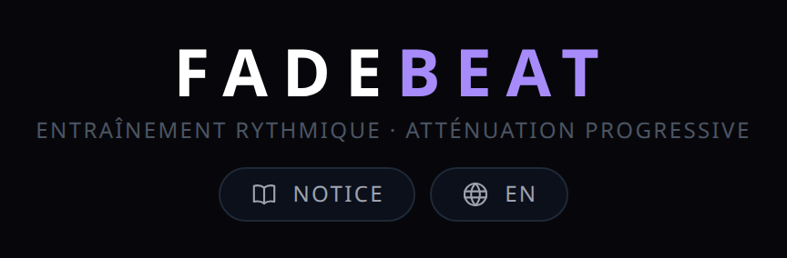
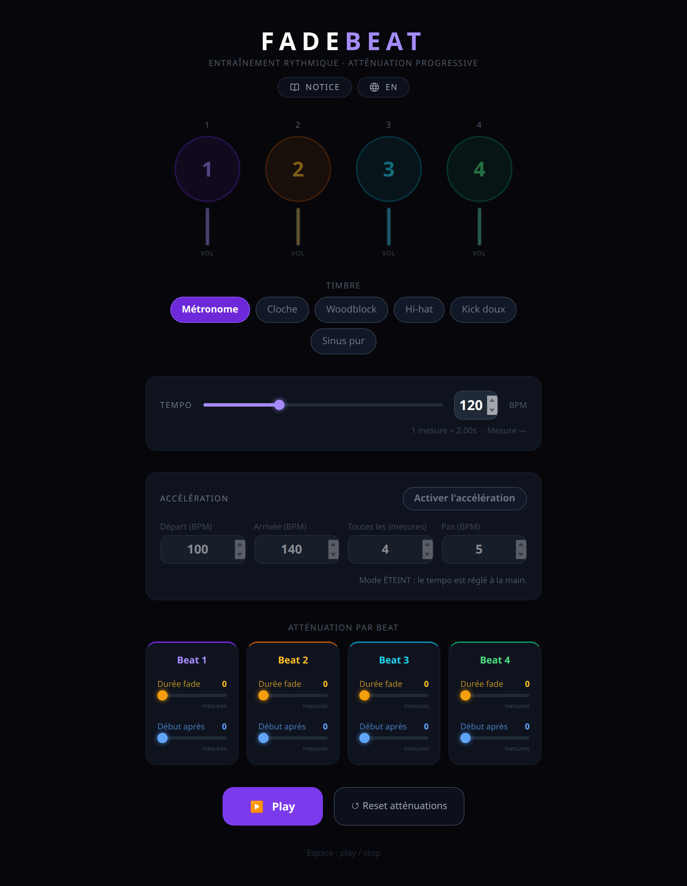
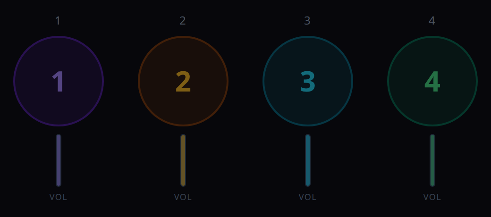
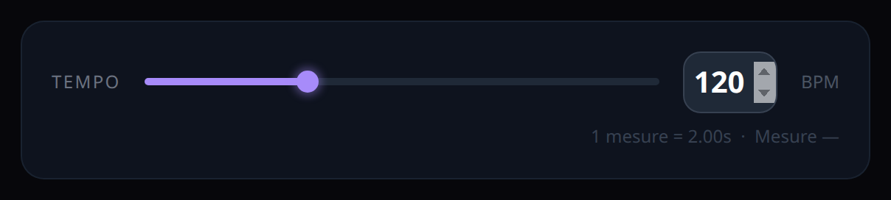
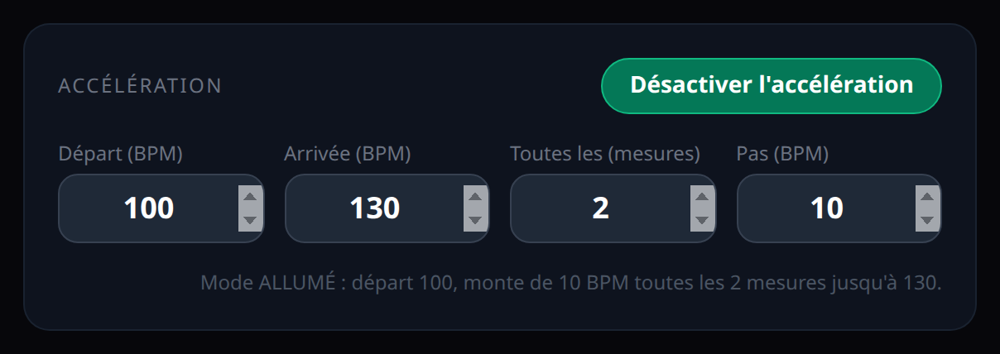
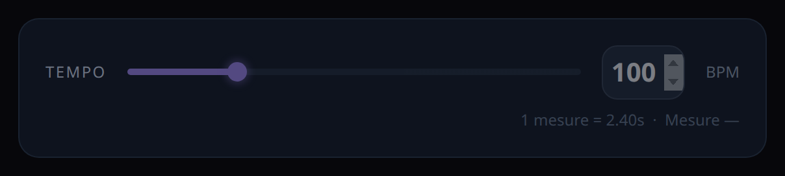
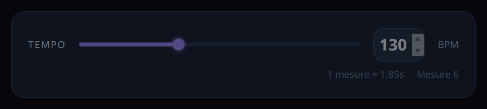
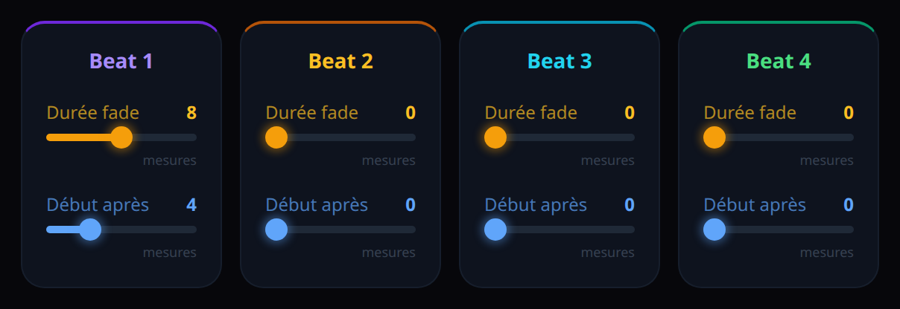

Chapitre 1
À quoi sert FadeBeat
FadeBeat est un métronome d'entraînement. Il fait ce qu'un métronome ordinaire ne fait pas : il fait disparaître peu à peu un ou plusieurs temps de la mesure. Le son s'efface, et toi tu continues. C'est ainsi qu'on intériorise la pulsation, au lieu de s'appuyer sur le clic.
L'idée vient de la vidéo de Jamie Anderson, « The Free Rhythm Tool That'll Transform Your Groove! ».
Comment l'ouvrir
- En ligne : ouvre l'adresse de FadeBeat dans ton navigateur. Rien à installer.
- En local : double-clique sur le fichier
FadeBeat.html. L'application tient dans ce seul fichier.
Vérifiée dans Chrome ; conçue pour marcher aussi dans Firefox, Edge et Safari (dans Firefox, les curseurs peuvent être moins colorés). Elle a besoin d'internet pour sa mise en forme (la bibliothèque Tailwind est chargée en ligne) mais aucun son n'est téléchargé : tout est fabriqué par le navigateur.
Ouvrir la notice
Cette notice s'ouvre depuis l'application elle-même : la pastille « Notice »,
marquée d'un petit livre ouvert, est en haut, centrée sous le sous-titre. Elle s'allume en violet au survol.
Un clic ouvre la notice dans un nouvel onglet, l'application reste où elle en est. Elle ouvre toujours
la notice de la langue affichée : notice/fr.html en français,
notice/en.html en anglais.

Changer la langue de l'appli
FadeBeat parle français ou anglais. Au premier chargement, elle suit la langue de ton navigateur : français s'il est en français, anglais dans tous les autres cas.
Pour passer dans l'autre langue, clique la pastille de droite, marquée d'un globe. Comme tous les boutons de FadeBeat, elle porte l'ordre, jamais l'état : elle affiche « EN » quand l'application est en français — un clic la fait passer en anglais — et « FR » quand elle est en anglais. Le changement est immédiat, sans rechargement : une lecture en cours n'est pas interrompue, ni le tempo ni le compteur de mesures ne bougent.
Ton choix est mémorisé par le navigateur : au prochain chargement, FadeBeat revient dans
cette langue. On peut aussi l'imposer dans l'adresse, avec ?lang=fr ou ?lang=en —
pratique pour partager un lien dans une langue précise.
La mesure est toujours à 4 temps. FadeBeat ne propose pas d'autre chiffrage.
Chapitre 2
L'écran d'un coup d'œil
Tout tient sur une seule page, de haut en bas :
- Le titre, le sous-titre et, juste dessous, deux pastilles : « Notice », qui ouvre cette notice dans un nouvel onglet, et la pastille de langue (un globe et « EN »), qui fait passer l'application en anglais — voir le chapitre 1.
- Les quatre cercles, un par temps, avec leur barre de volume.
- Le choix du timbre (six sons).
- Le tempo, curseur et champ en BPM.
- Le panneau Accélération.
- L'atténuation par beat : une carte par temps, deux curseurs chacune.
- Les boutons Play et Reset atténuations, puis le rappel « Espace : play / stop ».

Chapitre 3
Les quatre cercles et les barres de volume
Chaque cercle représente un temps de la mesure : 1 violet, le temps fort ; 2 ambre ; 3 cyan ; 4 vert.

Pendant la lecture, le cercle pulse et s'illumine à l'instant exact de son temps. Plus le temps est fort, plus le halo est large. Un temps devenu silencieux ne s'illumine plus : le cercle bat encore, mais sans lumière.
La barre verticale sous chaque cercle montre le volume auquel ce temps vient de sonner. Quand une atténuation est en cours, la barre descend mesure après mesure jusqu'à s'éteindre.

Chapitre 4
Le timbre
Six sons au choix, tous fabriqués par le navigateur. Le bouton violet est le son actif ; un clic sur un autre bouton change le son immédiatement, même pendant la lecture.

- Métronome — le clic bois classique.
- Cloche — sonnerie douce, longue résonance.
- Woodblock — frappe sèche et courte.
- Hi-hat — charleston fermé, très bref.
- Kick doux — grosse caisse légère, grave.
- Sinus pur — bip électronique neutre.
Le temps 1 est accentué — plus haut et plus fort que les trois autres — avec quatre timbres sur six : Métronome, Cloche, Kick doux et Sinus pur. Woodblock et Hi-hat n'ont pas d'accent : leurs quatre temps sonnent à l'identique. Avec ces deux-là, le temps fort se repère à l'œil (le cercle violet), pas à l'oreille.
Chapitre 5
Le tempo

- Le curseur va de 40 à 300 BPM.
- Le champ à droite accepte une valeur tapée au clavier, dans les mêmes bornes. Le curseur suit le champ ; au plus tard quand tu quittes le champ, les deux sont d'accord. Une valeur hors des bornes (moins de 40, plus de 300) est ignorée : le tempo ne bouge pas, et en quittant le champ celui-ci revient au tempo courant.
- Sous le curseur : « 1 mesure = … s », la durée d'une mesure de quatre temps au tempo choisi, et « Mesure … », le numéro de la mesure en cours de lecture. Ce compteur part de 0 et affiche un tiret à l'arrêt.
Le tempo se change à tout moment, y compris pendant la lecture. Quand l'accélération est allumée, ce panneau est verrouillé : il ne fait plus qu'afficher, c'est le chapitre suivant.
Chapitre 6
L'accélération
Ce mode fait monter (ou descendre) le tempo tout seul, par paliers, pendant que tu joues. Il sert à travailler un passage de plus en plus vite sans toucher à l'écran.

Le bouton et la ligne d'état
Le bouton dit toujours ce qu'il va faire : « Activer l'accélération » quand le mode est éteint, « Désactiver l'accélération » quand il est allumé. Pour savoir où on en est, lis la ligne d'état sous les champs : elle dit « Mode ÉTEINT » ou « Mode ALLUMÉ », et en lecture elle donne le tempo courant et le nombre de mesures avant le prochain palier.
Les quatre réglages
- Départ (BPM), de 40 à 300 : le tempo au lancement.
- Arrivée (BPM), de 40 à 300 : le tempo final, où le métronome se stabilise.
- Toutes les (mesures), de 1 à 32 : la longueur d'un palier.
- Pas (BPM), de 1 à 60 : de combien le tempo change à chaque palier.
Une valeur hors bornes est ramenée dans la borne dès que tu quittes le champ.


Ce qui se passe en lecture
- Le métronome démarre au tempo de départ.
- Toutes les m mesures, au premier temps, il change de n BPM.
- Le dernier palier est écrêté sur l'arrivée : on ne la dépasse jamais.
- Une fois l'arrivée atteinte, le tempo reste fixe tant que tu joues.



Exemple : départ 100, arrivée 130, toutes les 2 mesures, pas 10. Les mesures 0 et 1 sont à 100, les mesures 2 et 3 à 110, les mesures 4 et 5 à 120, puis 130 à partir de la mesure 6.
Si l'arrivée est plus basse que le départ, c'est un ralentissement : le tempo descend de n à chaque palier.
Si départ et arrivée sont égaux, la ligne d'état le dit : le tempo ne bougera pas.
Bon à savoir
- Stop remet le tempo de départ.
- Activer ou désactiver le mode pendant la lecture redémarre le métronome à la mesure 0.
- Les atténuations du chapitre suivant comptent toujours en mesures, quel que soit le tempo du moment.
Chapitre 7
L'atténuation par beat
C'est le cœur de FadeBeat. Chaque temps a sa carte, et chaque carte a deux curseurs, indépendants des autres cartes.

Durée fade — de 0 à 16 mesures
Combien de mesures dure la descente, du volume plein jusqu'au silence.
0: pas d'atténuation, le temps sonne toujours à plein volume.4: le volume baisse régulièrement sur 4 mesures, puis silence.16: disparition très lente, sur 16 mesures.
Début après — de 0 à 16 mesures
Combien de mesures ce temps sonne à plein volume avant que la descente ne commence.
0: la descente commence dès la première mesure.8: huit mesures pleines, puis la descente.

Combien de temps ça dure, en secondes
Une mesure dure 240 divisé par le tempo, en secondes. À 120 BPM, une mesure fait 2 secondes ; une descente de 4 mesures dure donc 8 secondes. Le panneau Tempo affiche cette durée de mesure en permanence.
Les curseurs agissent tout de suite, même en lecture. Le compteur de mesures, lui, ne repart à zéro qu'au prochain Play.
Chapitre 8
Play, Stop, Reset et la touche Espace


- ▶ Play démarre le métronome à la mesure 0. Le bouton devient ■ Stop.
- ■ Stop arrête tout, éteint les cercles, remet les barres de volume pleines. Si l'accélération est allumée, le tempo revient au départ.
- ↺ Reset atténuations remet les huit curseurs d'atténuation à 0. Il ne touche ni au tempo, ni au timbre, ni à l'accélération.
- La touche Espace fait Play ou Stop, tant que le curseur clavier n'est ni sur un bouton ni dans un champ. Sur un bouton, Espace actionne ce bouton : il fait ce que le bouton annonce. Dans un champ, Espace ne fait rien. Clique dans le vide de la page pour rendre à Espace son rôle de Play / Stop.
Premier Play sans son ? Les navigateurs n'autorisent le son qu'après un geste de ta part sur la page. Un clic sur Play suffit ; si tu as lancé au clavier, clique une fois dans la page.
Chapitre 9
Trois exercices
1. Le temps fort disparaît
Travail : garder le 1 dans la tête sans l'entendre.
- Temps 1 : Durée fade
8, Début après4. - Les trois autres :
0.
Le 1 sonne quatre mesures à plein volume, puis s'efface sur huit mesures. Tu dois continuer à le ressentir.
2. Le squelette rythmique
Travail : intérioriser les temps faibles.
- Temps 2 et 4 : Durée fade
6, Début après0. - Temps 1 et 3 :
0.
Le contretemps disparaît peu à peu ; seuls le 1 et le 3 restent.
3. Le silence total
Travail : jouer seul, longtemps, sans repère.
- Les quatre temps : Durée fade
16, Début après8.
Huit mesures de plein volume, puis tout s'éteint lentement sur seize mesures. Les cercles continuent de battre : compare ce que tu joues à ce que tu vois.
Et avec l'accélération
Chaque exercice se combine avec le chapitre 6 : les atténuations comptent en mesures, le tempo peut monter en même temps.
Chapitre 10
Si quelque chose cloche
- Pas de son → clique une fois dans la page, puis Play. Vérifie aussi que l'onglet n'est pas coupé par le navigateur et que le volume du système n'est pas à zéro.
- Le tempo refuse de bouger → l'accélération est allumée : le panneau Tempo est grisé et la ligne d'état dit « Mode ALLUMÉ ». Clique « Désactiver l'accélération ».
- Un temps ne sonne plus → sa Durée fade n'est pas à 0 et sa descente est finie. Regarde sa barre de volume ; « Reset atténuations » remet tout à plein.
- Espace ne fait pas Play / Stop → le curseur clavier est sur un bouton (Espace actionne alors ce bouton, au lieu de lancer ou d'arrêter la lecture) ou dans un champ (là, Espace ne fait rien). Clique dans le vide de la page pour rendre à Espace son rôle de Play / Stop.
- La page est sans couleurs ni mise en forme → pas d'internet au chargement. Reconnecte et recharge.
- Le rythme est irrégulier → un onglet en arrière-plan est ralenti par le navigateur. Garde FadeBeat au premier plan.